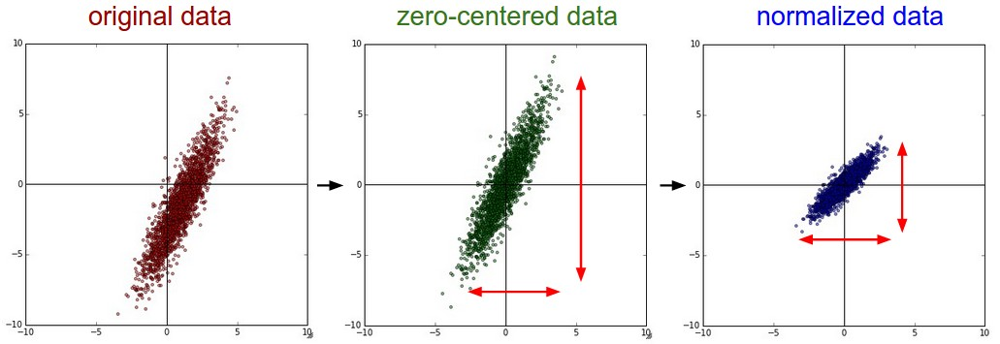

Neural Networks: Setting up the Data and the Loss
A Neural Network performs a sequence of linear mappings with interwoven non-linearities.
Data Preprocessing
There are three common forms of data preprocessing a data matrix X, where we will assume that X is of size [N x D] (N is the number of data, D is their dimensionality).
Mean subtraction
This is the most common form of preprocessing. It involves subtracting the mean across every individual feature in the data, and has the geometric interpretation of centering the cloud of data around the origin along every dimension. In numpy, this operation would be implemented as: X -= np.mean(X, axis = 0). With images specifically, for convenience it can be common to subtract a single value from all pixels (e.g. X -= np.mean(X)), or to do so separately across the three color channels.
Normalization
This refers to normalizing the data dimensions so that they are of approximately the same scale. There are two common ways of achieving this normalization. One is to divide each dimension by its standard deviation, once it has been zero-centered: (X /= np.std(X, axis = 0)). Another form of this preprocessing normalizes each dimension so that the min and max along the dimension is -1 and 1 respectively. It only makes sense to apply this preprocessing if you have a reason to believe that different input features have different scales (or units), but they should be of approximately equal importance to the learning algorithm. In case of images, the relative scales of pixels are already approximately equal (and in range from 0 to 255), so it is not strictly necessary to perform this additional preprocessing step.

Common data preprocessing pipeline. Left: Original toy, 2-dimensional input data. Middle: The data is zero-centered by subtracting the mean in each dimension. The data cloud is now centered around the origin. Right: Each dimension is additionally scaled by its standard deviation. The red lines indicate the extent of the data - they are of unequal length in the middle, but of equal length on the right.
PCA and Whitening
This is another form of preprocessing. In this process, the data is first centered as described above. Then, we can compute the covariance matrix that tells us about the correlation structure in the data:
# Assume input data matrix X of size [N x D]
X -= np.mean(X, axis = 0) # zero-center the data (important)
cov = np.dot(X.T, X) / X.shape[0] # get the data covariance matrix
The (i,j) element of the data covariance matrix contains the covariance between i-th and j-th dimension of the data. In particular, the diagonal of this matrix contains the variances. Furthermore, the covariance matrix is symmetric and positive semi-definite. We can compute the SVD factorization of the data covariance matrix:
where the columns of U are the eigenvectors and S is a 1-D array of the singular values. To decorrelate the data, we project the original (but zero-centered) data into the eigenbasis:
Notice that the columns of U are a set of orthonormal vectors (norm of 1, and orthogonal to each other), so they can be regarded as basis vectors. The projection therefore corresponds to a rotation of the data in X so that the new axes are the eigenvectors. If we were to compute the covariance matrix of Xrot, we would see that it is now diagonal. A nice property of np.linalg.svd is that in its returned value U, the eigenvector columns are sorted by their eigenvalues. We can use this to reduce the dimensionality of the data by only using the top few eigenvectors, and discarding the dimensions along which the data has no variance. This is also sometimes referred to as Principal Component Analysis (PCA) dimensionality reduction:
After this operation, we would have reduced the original dataset of size [N x D] to one of size [N x 100], keeping the 100 dimensions of the data that contain the most variance. It is very often the case that you can get very good performance by training linear classifiers or neural networks on the PCA-reduced datasets, obtaining savings in both space and time.
The last transformation you may see in practice is whitening. The whitening operation takes the data in the eigenbasis and divides every dimension by the eigenvalue to normalize the scale. The geometric interpretation of this transformation is that if the input data is a multivariable gaussian, then the whitened data will be a gaussian with zero mean and identity covariance matrix. This step would take the form:
# whiten the data:
# divide by the eigenvalues (which are square roots of the singular values)
Xwhite = Xrot / np.sqrt(S + 1e-5)
Warning: Exaggerating noise. Note that we're adding 1e-5 (or a small constant) to prevent division by zero. One weakness of this transformation is that it can greatly exaggerate the noise in the data, since it stretches all dimensions (including the irrelevant dimensions of tiny variance that are mostly noise) to be of equal size in the input. This can in practice be mitigated by stronger smoothing (i.e. increasing 1e-5 to be a larger number).

PCA / Whitening. Left: Original toy, 2-dimensional input data. Middle: After performing PCA. The data is centered at zero and then rotated into the eigenbasis of the data covariance matrix. This decorrelates the data (the covariance matrix becomes diagonal). Right: Each dimension is additionally scaled by the eigenvalues, transforming the data covariance matrix into the identity matrix. Geometrically, this corresponds to stretching and squeezing the data into an isotropic gaussian blob.
We can also try to visualize these transformations with CIFAR-10 images. The training set of CIFAR-10 is of size 50,000 x 3072, where every image is stretched out into a 3072-dimensional row vector. We can then compute the [3072 x 3072] covariance matrix and compute its SVD decomposition (which can be relatively expensive). What do the computed eigenvectors look like visually? An image might help:

Left*: An example set of 49 images. 2nd from Left: The top 144 out of 3072 eigenvectors. The top eigenvectors account for most of the variance in the data, and we can see that they correspond to lower frequencies in the images. 2nd from Right: The 49 images reduced with PCA, using the 144 eigenvectors shown here. That is, instead of expressing every image as a 3072-dimensional vector where each element is the brightness of a particular pixel at some location and channel, every image above is only represented with a 144-dimensional vector, where each element measures how much of each eigenvector adds up to make up the image. In order to visualize what image information has been retained in the 144 numbers, we must rotate back into the "pixel" basis of 3072 numbers. Since U is a rotation, this can be achieved by multiplying by U.transpose()[:144,:], and then visualizing the resulting 3072 numbers as the image. You can see that the images are slightly blurrier, reflecting the fact that the top eigenvectors capture lower frequencies. However, most of the information is still preserved. Right*: Visualization of the "white" representation, where the variance along every one of the 144 dimensions is squashed to equal length. Here, the whitened 144 numbers are rotated back to image pixel basis by multiplying by U.transpose()[:144,:]. The lower frequencies (which accounted for most variance) are now negligible, while the higher frequencies (which account for relatively little variance originally) become exaggerated.
In practice. We mention PCA/Whitening in these notes for completeness, but these transformations are not used with Convolutional Networks. However, it is very important to zero-center the data, and it is common to see normalization of every pixel as well.
Common pitfall. An important point to make about the preprocessing is that any preprocessing statistics (e.g. the data mean) must only be computed on the training data, and then applied to the validation / test data. E.g. computing the mean and subtracting it from every image across the entire dataset and then splitting the data into train/val/test splits would be a mistake. Instead, the mean must be computed only over the training data and then subtracted equally from all splits (train/val/test).
Weight Initialization
We have seen how to construct a Neural Network architecture, and how to preprocess the data. Before we can begin to train the network we have to initialize its parameters.
Pitfall: all zero initialization. Lets start with what we should not do. Note that we do not know what the final value of every weight should be in the trained network, but with proper data normalization it is reasonable to assume that approximately half of the weights will be positive and half of them will be negative. A reasonable-sounding idea then might be to set all the initial weights to zero, which we expect to be the "best guess" in expectation. This turns out to be a mistake, because if every neuron in the network computes the same output, then they will also all compute the same gradients during backpropagation and undergo the exact same parameter updates. In other words, there is no source of asymmetry between neurons if their weights are initialized to be the same.
Small random numbers. Therefore, we still want the weights to be very close to zero, but as we have argued above, not identically zero. As a solution, it is common to initialize the weights of the neurons to small numbers and refer to doing so as symmetry breaking. The idea is that the neurons are all random and unique in the beginning, so they will compute distinct updates and integrate themselves as diverse parts of the full network. The implementation for one weight matrix might look like W = 0.01* np.random.randn(D,H), where randn samples from a zero mean, unit standard deviation gaussian. With this formulation, every neuron's weight vector is initialized as a random vector sampled from a multi-dimensional gaussian, so the neurons point in random direction in the input space. It is also possible to use small numbers drawn from a uniform distribution, but this seems to have relatively little impact on the final performance in practice.
Warning: It's not necessarily the case that smaller numbers will work strictly better. For example, a Neural Network layer that has very small weights will during backpropagation compute very small gradients on its data (since this gradient is proportional to the value of the weights). This could greatly diminish the "gradient signal" flowing backward through a network, and could become a concern for deep networks.
Calibrating the variances with 1/sqrt(n). One problem with the above suggestion is that the distribution of the outputs from a randomly initialized neuron has a variance that grows with the number of inputs. It turns out that we can normalize the variance of each neuron's output to 1 by scaling its weight vector by the square root of its fan-in (i.e. its number of inputs). That is, the recommended heuristic is to initialize each neuron's weight vector as: w = np.random.randn(n) / sqrt(n), where n is the number of its inputs. This ensures that all neurons in the network initially have approximately the same output distribution and empirically improves the rate of convergence.
The sketch of the derivation is as follows: Consider the inner product \(s = \sum_i^n w_i x_i\) between the weights \(w\) and input \(x\), which gives the raw activation of a neuron before the non-linearity. We can examine the variance of \(s\):
where in the first 2 steps we have used properties of variance. In third step we assumed zero mean inputs and weights, so \(E[x_i] = E[w_i] = 0\). Note that this is not generally the case: For example ReLU units will have a positive mean. In the last step we assumed that all \(w_i, x_i\) are identically distributed. From this derivation we can see that if we want \(s\) to have the same variance as all of its inputs \(x\), then during initialization we should make sure that the variance of every weight \(w\) is \(1/n\). And since \(\text{Var}(aX) = a^2\text{Var}(X)\) for a random variable \(X\) and a scalar \(a\), this implies that we should draw from unit gaussian and then scale it by \(a = \sqrt{1/n}\), to make its variance \(1/n\). This gives the initialization w = np.random.randn(n) / sqrt(n).
Batch Normalization
Batch Normalization. A recently developed technique by Ioffe and Szegedy called Batch Normalization alleviates a lot of headaches with properly initializing neural networks by explicitly forcing the activations throughout a network to take on a unit gaussian distribution at the beginning of the training. The core observation is that this is possible because normalization is a simple differentiable operation. In the implementation, applying this technique usually amounts to insert the BatchNorm layer immediately after fully connected layers (or convolutional layers, as we'll soon see), and before non-linearities. We do not expand on this technique here because it is well described in the linked paper, but note that it has become a very common practice to use Batch Normalization in neural networks. In practice networks that use Batch Normalization are significantly more robust to bad initialization. Additionally, batch normalization can be interpreted as doing preprocessing at every layer of the network, but integrated into the network architecture in a differentiable way.
Regularization
There are several ways of controlling the capacity of Neural Networks to prevent overfitting:
L2 regularization is perhaps the most common form of regularization. It can be implemented by penalizing the squared magnitude of all parameters directly in the objective. That is, for every weight \(w\) in the network, we add the term \(\frac{1}{2} \lambda w^2\) to the objective, where \(\lambda\) is the regularization strength. It is common to see the factor of \(\frac{1}{2}\) in front because then the gradient of this term with respect to the parameter \(w\) is simply \(\lambda w\) instead of \(2 \lambda w\). The L2 regularization has the intuitive interpretation of heavily penalizing peaky weight vectors and preferring diffuse weight vectors. As we discussed in the Linear Classification section, due to multiplicative interactions between weights and inputs this has the appealing property of encouraging the network to use all of its inputs a little rather than some of its inputs a lot.
L1 regularization is another relatively common form of regularization, where for each weight \(w\) we add the term \(\lambda |w|\) to the objective. It is possible to combine the L1 regularization with the L2 regularization: \(\lambda_1 |w| + \lambda_2 w^2\) (this is called Elastic net regularization). The L1 regularization has the intriguing property that it leads the weight vectors to become sparse during optimization (i.e. very close to exactly zero). In other words, neurons with L1 regularization end up using only a sparse subset of their most important inputs and become nearly invariant to the "noisy" inputs. In comparison, final weight vectors from L2 regularization are usually diffuse, small numbers. In practice, if you are not concerned with explicit feature selection, L2 regularization can be expected to give better performance than L1.
Max norm constraints. Another form of regularization is to enforce an absolute upper bound on the magnitude of the weight vector for every neuron and use projected gradient descent to enforce the constraint. In practice, this corresponds to performing the parameter update as normal, and then enforcing the constraint by clamping the weight vector \(\vec{w}\) of every neuron to satisfy \(||\vec{w}||_2 < c\). Typical values of \(c\) are on orders of 3 or 4. Some people report improvements when using this form of regularization. One of its appealing properties is that even if the learning rate is set too high, the network cannot "explode" because the updates are always bounded.
Dropout is an extremely effective, simple and recently introduced regularization technique by Srivastava et al. in Dropout: A Simple Way to Prevent Neural Networks from Overfitting (pdf) that complements the other methods (L1, L2, maxnorm). While training, dropout is implemented by only keeping a neuron active with some probability \(p\) (a hyperparameter), or setting it to zero otherwise.

Left: A standard 2-layer Neural Network. Right: An example of a 2-layer Neural Network with dropout applied. Crossed units have been randomly "dropped out" of the network.
Vanilla dropout in an example 3-layer Neural Network would be implemented as follows:
""" Vanilla Dropout: Not recommended implementation (see notes below) """
p = 0.5 # probability of keeping a unit active. higher = less dropout
def train_step(X):
""" X contains the data """
# forward pass for example 3-layer neural network
H1 = np.maximum(0, np.dot(W1, X) + b1)
U1 = np.random.rand(*H1.shape) < p # first dropout mask
H1 *= U1 # drop!
H2 = np.maximum(0, np.dot(W2, H1) + b2)
U2 = np.random.rand(*H2.shape) < p # second dropout mask
H2 *= U2 # drop!
out = np.dot(W3, H2) + b3
# backward pass: compute gradients... (not shown)
# perform parameter update... (not shown)
def predict(X):
# ensembling forward pass
H1 = np.maximum(0, np.dot(W1, X) + b1) * p # scale the activations
H2 = np.maximum(0, np.dot(W2, H1) + b2) * p # scale the activations
out = np.dot(W3, H2) + b3
The key insight is that we can think of dropout as creating a kind of ensemble of neural networks. The number of possible "sub-networks" is exponential in the number of neurons, and each of these networks is seen during training, but none of them are seen in their entirety. At test time, we simply evaluate the full network without any dropout, but with the weights scaled down by the dropout probability. This ensures that for any neuron the expected output is the same as the expected output during training time. For example, if \(p = 0.5\), then neurons are dropped out randomly with probability 0.5, and the remaining neurons are scaled by 2. The scaling ensures that the total input to the next layer is roughly the same.
Theme of noise in forward pass. Dropout falls into a more general category of methods that introduce stochastic behavior in the forward pass of the network. During testing, the noise is marginalized over analytically (as is the case with dropout when multiplying by \(p\)), or numerically (e.g. via sampling, by performing several forward passes with different random decisions and then averaging over them). An example of other research in this direction includes DropConnect, where individual connections, instead of entire neurons, are randomly set to zero during forward pass. As foreshadowing, Convolutional Neural Networks also take advantage of this theme with methods such as stochastic pooling, fractional pooling, and data augmentation. We will go into details of these methods in the sections ahead.
Bias regularization. As we already mentioned in the Linear Classification section, it is not common to regularize the bias parameters because they do not interact with the data through multiplicative interactions, and therefore do not have the interpretation of controlling the influence of a data dimension on the final objective. However, in practical applications (and with proper data preprocessing) regularizing the bias rarely leads to significantly worse performance. This is likely because there are very few bias terms compared to all the weights, so the classifier can "afford to" use the biases if it needs them to obtain a better data loss.
Per-layer regularization. It is not very common to regularize different layers to different amounts (except perhaps the output layer). Relatively few results regarding this idea have been published in the literature.
In practice: It is most common to use a single, global L2 regularization strength that is cross-validated. It is also common to combine this with dropout applied after all layers. The value of \(p = 0.5\) is a reasonable default, but this can be tuned on validation data.
Loss Functions
We have discussed the regularization loss part of the objective, which can be seen as penalizing some measure of complexity of the model. The second part of an objective is the data loss, which in a supervised learning problem measures the compatibility between a prediction (e.g. the class scores in classification) and the ground truth label. The data loss takes the form of an average over the data losses for every individual example. That is, \(L = \frac{1}{N} \sum_i L_i\) where \(N\) is the number of training data.
Classification is the case that we have so far discussed at length. Here, we assume a dataset of examples and a single correct label (out of a fixed set) for each example. One of two most commonly seen cost functions in this setting is the SVM (e.g. the Weston Watkins formulation):
As we briefly alluded to, some people report better performance with the squared hinge loss (i.e. instead using \(\max(0, f_j - f_{y_i} + 1)^2\)), but it is not as common. The other common choice is the Cross-Entropy loss that we saw on the Softmax classifier:
Problem: Large number of classes. When the set of labels is very large (e.g. words in English dictionary, or ImageNet which contains 22,000 categories), computing the full softmax probabilities becomes expensive. For certain applications, approximate versions are popular. For instance, it may be helpful to use Hierarchical Softmax in natural language processing tasks (see one explanation here (pdf)). The hierarchical softmax decomposes words as labels in a tree. Each label is then represented as a path along the tree, and a Softmax classifier is trained at every node of the tree to disambiguate between the left and right branch. The structure of the tree strongly impacts the performance and is generally problem-dependent.
Attribute classification. Both losses above assume that there is a single correct answer \(y_i\). But what if \(y_i\) is a binary vector where every example may or may not have a certain attribute, and where the attributes are not mutually exclusive? For example, images on Instagram can be thought of as labeled with a certain hashtag, and a single image may have multiple hashtags, so the "ground truth" label \(y_i\) would be a binary vector where the positive elements indicate the attributes that are present in the image. In this case, a sensible approach is to build a binary classifier for every single attribute independently. For example, a binary classifier for each category independently would take the form:
where the sum is over all categories \(j\), and \(y_{ij}\) is either +1 or -1 depending on whether the i-th example is labeled with the j-th attribute, and the score vector \(f_j\) will be positive when the class is predicted to be present and negative otherwise. Notice that loss is accumulated if a positive sample has score \(< +1\) or if a negative sample has score \(> -1\).
An alternative to this loss would be to train a logistic regression classifier for every attribute independently. A binary logistic regression classifier has only two classes (0,1), and calculates the probability of class 1 as:
Since the probabilities of class 1 and 0 sum to one, the probability of class 0 is \(P(y = 0 | x; w, b) = 1 - P(y = 1 | x; w, b)\). Hence, an example is classified as a positive example (y = 1) if \(\sigma(\sum_i w_i x_i + b) > 0.5\), or equivalently if the score \((\sum_i w_i x_i + b) > 0\). The loss function maximizes the log likelihood of this probability. You can convince yourself that this is simplified to:
where the labels \(y_{ij}\) are either 1 (positive) or 0 (negative), and \(\sigma(\cdot)\) is the sigmoid function. The expression above can look scary but the gradient on \(f\) is in fact extremely simple and intuitive: \(\frac{\partial L_i}{\partial f_j} = y_{ij} - \sigma(f_j)\) (as you can double check yourself by taking the derivatives). This is beautiful: the gradient on the scores is simply the difference between the ground truth and the predicted probabilities.
Regression is the task of predicting real-valued quantities, such as the price of houses or the length of fish in an image. For this task, it is common to compute the loss between the predicted quantity and the true answer and then measure the L2 squared norm, or L1 norm, of the difference. The L2 norm squared would compute the loss for a single example as:
The reason the L2 norm is squared in the objective is that the gradient becomes much simpler, without changing the optimal parameters since squaring is a monotonic operation. The L1 norm would be formulated as \(L_i = ||f - y_i||_1 = \sum_j |f_j - (y_i)_j|\). The L1 penalty is less sensitive to outliers than the L2 penalty, and has lower gradients for small values. However, the L1 penalty has a discontinuity at zero, which makes the optimization problem non-smooth and is the source of many technical difficulties. Therefore, it is much more common to see the L2 penalty instead of the L1 penalty in practice.
Word of caution: It is important to note that the L2 loss is much harder to optimize than a more stable loss such as the Softmax. Intuitively, it requires a very fragile and specific property from the network to output exactly one correct value for each input (and its augmentations). In contrast, the Softmax classifier is much more robust to the exact values of the scores, for example it is very hard for the score distribution to be: [10, -10, -10] and for the classifier to be correct, but it is much more acceptable for it to give [10, -9, -9] (which is more diffuse) and still be correct. Additionally, the L2 loss penalizes large errors more heavily than small ones, which can be problematic if the input has outliers or incorrect labels. Because of this, a more common approach is to use a classification approach even for variables that seem to have continuous values, or to "bin" the target values and treat the problem as a classification problem.
Summary
In this section we introduced several important concepts for setting up a Neural Network:
-
Data preprocessing: We saw that centering the data (subtracting the mean) and normalizing it (dividing by the standard deviation) is very important for training neural networks. We also discussed PCA and whitening as preprocessing techniques.
-
Weight initialization: We saw that initializing weights to small random numbers is important for breaking symmetry, and that scaling by \(1/\sqrt{n}\) where \(n\) is the number of inputs helps maintain unit variance of activations.
-
Batch Normalization: We introduced batch normalization as a technique to normalize activations throughout the network, making training more robust to initialization.
-
Regularization: We discussed L1, L2, maxnorm regularization, and dropout as ways to prevent overfitting. Dropout is particularly effective and commonly used in practice.
-
Loss functions: We covered classification losses (SVM, Cross-entropy), attribute classification, and regression losses (L1, L2).
The next step is to discuss optimization algorithms for training these networks.